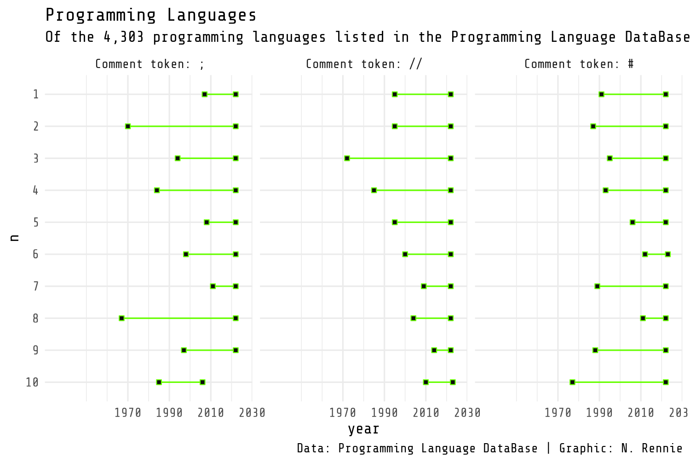

2 프로그래밍 언어: ggplot2를 이용한 덤벨 차트
이 장에서는 점과 선을 결합하여 덤벨 차트를 만들고, 데이터 기반 캡션을 생성하며, 테마, 글꼴, 색상을 사용하여 차트 스타일을 지정하는 방법을 배웁니다.
이 장을 마치면 다음을 할 수 있게 됩니다:
-
ggplot2에서 제공하는 기본 도형을 사용하여 덤벨 차트 만들기 - 차트 디자인에 적합한 글꼴을 선택하고 플롯에서 사용하기 위해 R로 로드하기
- 고품질 플롯 이미지를 다양한 형식으로 저장하는 방법 이해하기
이 장에 필요한 패키지를 로드하는 것으로 시작합니다.
데이터 랭글링에 사용할 dplyr 및 tidyr 패키지와 ggplot2 자체에 대해서는 이미 약간 익숙하다고 가정합니다! 다른 패키지들은 사용할 때 소개하겠지만, 각 패키지의 목적에 대해 간단히 요약하면 다음과 같습니다:
-
ggtext:ggplot2텍스트에서 마크다운, HTML, CSS 서식을 사용할 수 있게 해줍니다. -
glue: R 코드와 문자열을 접착(gluing)하여 텍스트를 생성합니다. -
showtext및sysfonts: 글꼴을 로드하고 R 세션 내에서 사용할 수 있게 해줍니다. -
tidytuesdayR: TidyTuesday 프로젝트의 일부로 GitHub에 게시된 데이터에 액세스합니다.
2.1 데이터
이 장에서는 프로그래밍 언어 데이터베이스(PLDB) (PLDB contributors 2022)를 살펴보겠습니다. 이 데이터베이스는 프로그래밍 언어 백과사전으로, 순위, 생성 시기, 언어 유형, 해당 언어를 사용하는 GitHub 저장소 수 등 몇 가지 변수만 예로 들어도 많은 정보가 포함되어 있습니다. 프로그래밍 언어 제작자는 데이터베이스를 사용하여 프로그래밍 언어를 설계하고 개선할 수 있으며, 프로그래밍 언어 사용자는 데이터베이스를 사용하여 어떤 언어를 사용하거나 배울지 결정하는 데 도움을 받을 수 있습니다.
PLDB는 공유 도메인으로 게시되며 pldb.io에서 온라인으로 찾아 쿼리를 만들고 데이터를 볼 수 있습니다. 데이터를 CSV 또는 JSON 형식으로 다운로드할 수도 있습니다. PLDB 데이터는 2023년 3월 TidyTuesday 데이터세트로 사용되었으므로(Jesus M. Castagnetto의 제안 이후), tidytuesdayR R 패키지 (Hughes 2022b)를 사용하여 데이터를 R로 쉽게 로드할 수도 있습니다.
tidytuesdayR R 패키지에는 TidyTuesday 데이터와 정보를 R로 가져오는 데 도움이 되는 여러 함수가 있습니다. 가장 일반적으로 사용되는 함수 중 하나는 특정 주(날짜로 지정)의 데이터를 R 세션으로 로드하는 tt_load() 함수입니다. 특정 주에 여러 데이터세트가 있을 수 있으며, $ 표기법을 사용하여 특정 데이터세트에 액세스할 수 있습니다:
tuesdata <- tt_load("2023-03-21")
languages <- tuesdata$languages또는 연도와 주를 사용하여 tidytuesdayR을 통해 데이터를 읽을 수도 있습니다. 예를 들어 languages <- tt_load(2023, week = 12)와 같습니다. 또한 기본 R의 read.csv() 또는 readr의 read_csv()를 사용하여 GitHub의 CSV 파일에서 직접 데이터를 읽을 수도 있습니다.
데이터는 어떻게 생겼을까요? head()를 사용하여 데이터의 처음 6행을 검사할 수 있습니다:
head(languages)# A tibble: 6 × 49
pldb_id title description type appeared creators website
<chr> <chr> <chr> <chr> <dbl> <chr> <chr>
1 java Java <NA> pl 1995 James G… https:…
2 javascr… Java… <NA> pl 1995 Brendan… <NA>
3 c C <NA> pl 1972 Dennis … <NA>
4 python Pyth… <NA> pl 1991 Guido v… https:…
5 sql SQL <NA> quer… 1974 Donald … <NA>
6 cpp C++ <NA> pl 1985 Bjarne … http:/…
# ℹ 42 more variables: domain_name <chr>,
# domain_name_registered <dbl>, reference <chr>,
# isbndb <dbl>, book_count <dbl>, semantic_scholar <dbl>,
# language_rank <dbl>, github_repo <chr>,
# github_repo_stars <dbl>, github_repo_forks <dbl>,
# github_repo_updated <dbl>,
# github_repo_subscribers <dbl>, …더 읽기 쉬운 형식을 선호한다면 View()를 사용하여 RStudio에서 새 탭을 열어 편집 불가능한 스프레드시트 파일과 유사한 형태로 데이터를 검사할 수도 있습니다. 이 매우 기본적인 방법(먼저 눈으로만 보는 것)으로 데이터를 검사하면 데이터가 올바르게 읽혔는지 확인하는 데 도움이 됩니다. 이 데이터세트에는 4303개의 행과 49개의 열이 있어 더 탐색할 수 있는 변수 옵션이 많습니다. 어떤 변수가 있을까요? TidyTuesday GitHub 저장소에 포함된 데이터 설명이 시작하기 좋은 곳인 경우가 많습니다. 열 이름과 각 열의 데이터가 무엇을 의미하는지 포함된 표는 보고 있는 데이터에 대한 더 많은 맥락을 제공하는 데 도움이 될 수 있습니다(특히 열 이름이 직관적이지 않은 경우 더욱 그렇습니다!). PLDB 데이터세트의 경우 pldb.io/csv.html의 웹사이트에서 변수에 대한 훨씬 더 심층적인 설명을 볼 수 있습니다. 여기서 이 데이터세트의 TidyTuesday 버전은 356개의 변수를 포함하는 더 큰 데이터세트의 하위 집합이라는 것도 알 수 있습니다. 이 장에서는 더 작은 버전을 계속 사용하겠습니다!
데이터에 결측값(NA)이 있는 변수가 많습니다. description 열, github_ 열, reference 열 또는 is_open_source 열에 항목이 있는 언어는 거의 없습니다. 결측값은 매우 중요합니다. 결측값이 있는 행이나 열을 단순히 버리고 싶지는 않은데, 이는 종종 데이터에 대한 중요한 정보를 많이 알려줄 수 있기 때문입니다. 예를 들어, github_ 열의 많은 결측값은 많은 프로그래밍 언어가 2008년 GitHub가 생성되기 이전에 만들어졌다는 사실과 관련이 있을 수 있습니다. 이 열에 결측값이 있다고 해서 행을 버리면 새로운 프로그래밍 언어에 대한 분석이 편향될 수 있습니다. 결측 데이터를 처리하는 방법은 여러 가지가 있으며, 어떤 방법을 사용할지는 달성하고자 하는 목표에 따라 다릅니다. 그렇긴 하지만, 이 책은 통계 책이 아니므로 시각화를 위해 대부분 완료된 열에 초점을 맞출 것입니다. 결측 데이터에 대한 추가 논의는 Chapter 4 및 Chapter 10 에서 찾을 수 있습니다.
그럼 어떤 열을 먼저 살펴봐야 할까요? 데이터를 다룰 때 종종 관심 있는 결과가 있습니다. 분야에 따라 이를 반응 변수 또는 종속 변수라고 부를 수도 있습니다. 관심 있는 결과가 여러 개일 수도 있습니다. 예를 들어 PLDB 데이터에서 우리는 프로그래밍 언어의 순위 및/또는 GitHub 스타 수에 무엇이 영향을 미치는지 관심이 있을 수 있습니다. 이것들은 종종 우리가 이야기하고 싶은 변수입니다. 그러나 여러분이 전하는 이야기가 올바른지 확인하기 위해 다른 변수 간의 관계를 탐색하는 것에 대해 생각하는 것도 중요합니다. github_repo_stars와 github_repo_forks 사이에 관계가 있을 수 있다는 것은 분명해 보이지만, 정확히 어떤 관계일까요? last_activity와 number_of_jobs 사이의 덜 분명한 연결은 어떨까요? 거기에 관계가 있을까요?
2.2 탐색 작업
데이터를 보고, 행과 열의 수를 세고, 다른 열의 값을 검사하는 것 외에도 탐색 작업의 핵심 부분은 데이터를 시각화하는 것입니다. 이러한 초기 시각화는 데이터에 문제가 있는지(예: Monday를 Mnoday로 잘못 입력함) 확인하는 데 도움이 될 수 있습니다. 또한 데이터에서 흥미로운 관계나 패턴을 식별하는 데 도움이 되어 탐색 및 적절한 모델링 기술을 위한 추가 방향을 안내할 수 있습니다.
다양한 유형의 플롯이 있으며 이 책에서 여러 가지 다른 예를 볼 수 있습니다. 일부는 이전에 본 적이 있을 수도 있고 다른 일부는 그렇지 않을 수도 있습니다. 그러나 초기 탐색 플롯의 경우 종종 산점도, 막대 차트, 상자 그림, 밀도 플롯 및 선형 차트와 같은 고전적인 차트가 시작하기 좋은 곳입니다. 산점도는 두 연속 변수 간의 관계를 탐색하는 데 유용하고, 다중 밀도 플롯 또는 상자 그림은 범주형 변수와 연속형 변수 간의 관계를 탐색하는 데 유용하며, 막대 차트는 여러 범주형 변수 간의 관계를 탐색하는 데 유용하고, 선형 차트는 연속형 변수가 시간에 따라 어떻게 변하는지 보여주는 데 유용합니다.
2.2.1 데이터 탐색
이 장에서 모든 열을 탐색할 수는 없지만 집에서 직접 해보시길 권장합니다. 우리는 고려하고 싶은 가장 분명한 결과인 language_rank부터 시작하겠습니다. 이 데이터에서 순위는 0부터 시작합니다(1부터 인덱싱하는 것이 더 낫다는 농담을 여기에 삽입하세요…). 우리는 last_activity 열을 순위와 관련하여 살펴보고 싶을 수 있습니다. 최근 활동이 더 많은 프로그래밍 언어가 더 인기가 있을까요? 마지막 활동(x축)과 언어 순위(y축)의 산점도를 만드는 것으로 시작하겠습니다. Figure 2.1 에서 xlab 및 ylab으로 더 나은 축 제목을 추가하는 것은 혼자만 이 플롯을 보는 경우 불필요하지만, 다른 사람과 공유하는 경우 유용한 작업이 될 수 있습니다. 특히 열 이름이 여기서 보는 것보다 덜 설명적인 경우 더욱 그렇습니다!
plot(
x = languages$last_activity,
y = languages$language_rank,
xlab = "Last activity",
ylab = "Rank"
)이것은 탐색적 분석에서 데이터 시각화의 역할을 바로 강조합니다. 이 산점도는 꽤 올바르게 보이지 않습니다. last_activity 데이터는 약 -1000에서 2000이 조금 넘는 범위이며 대부분의 값은 2000 표시 근처에 있습니다. 이것이 날짜 열이어야 한다면 이 값이 올바른지 생각해야 합니다.
- 단순히 잘못된 입력인가요?
- 결측값인가요? 결측값이 예를 들어
-999로 인코딩되는 것은 드문 일이 아닙니다. 데이터가 R로 로드되기 전에 다른 소프트웨어에서 처리된 경우 특히 그렇습니다. 데이터에NA값이 있다고 해서 이렇게 비정상적으로 코딩된 결측값도 가질 수 없다는 의미는 아닙니다. 값은 다양한 이유로 누락될 수 있으며 때로는 이러한 차이를 보여주기 위해 여러 가지 방식으로 인코딩됩니다. - 이 값들이 우리가 예상하지 못한 방식으로 변환되나요? 날짜는 정수 값으로 인코딩될 수 있습니다. 종종 기원 시간 이후의 일수로 인코딩됩니다. R에서 사용되는 기원 시간은 종종
"1970-01-01"이므로 1970년 이전 데이터를 다루는 경우 음수 날짜가 있는 것은 합리적입니다.
이 경우 날짜는 실제로는(Date 객체가 아니라) 연도로만 주어지므로 음수 값이 잘못 변환된 값일 가능성은 낮습니다. 이 행들을 걸러낼 경우 어떤 연도를 기준으로 걸러내야 할까요? 1500년 이전? 1970년 이전? 실제로 이 행들을 살펴보겠습니다:
# A tibble: 6 × 49
pldb_id title description type appeared creators website
<chr> <chr> <chr> <chr> <dbl> <chr> <chr>
1 roman-n… Roma… <NA> nume… -900 <NA> <NA>
2 etrusca… Etru… <NA> nume… -700 <NA> <NA>
3 attic-n… Atti… <NA> nume… -600 <NA> <NA>
4 greek-n… Gree… <NA> nume… -300 <NA> <NA>
5 arezzo-… arez… "The stave… musi… 1033 <NA> <NA>
6 fibonac… Libe… "The Arabi… nota… 1202 <NA> <NA>
# ℹ 42 more variables: domain_name <chr>,
# domain_name_registered <dbl>, reference <chr>,
# isbndb <dbl>, book_count <dbl>, semantic_scholar <dbl>,
# language_rank <dbl>, github_repo <chr>,
# github_repo_stars <dbl>, github_repo_forks <dbl>,
# github_repo_updated <dbl>,
# github_repo_subscribers <dbl>, …프로그래밍 언어 데이터베이스라는 이름은 프로그래밍 언어에만 초점을 맞추고 있음을 암시할 수 있지만 사실은 그렇지 않습니다. 쿼리 언어, 스타일시트 언어 및 프로토콜 등에 대한 정보도 포함되어 있습니다. 여기에서 볼 수 있듯이 숫자 체계도 포함됩니다.
기본 R의 {graphics} 패키지에 있는 barplot() 함수를 사용하여 만든 막대 차트를 사용하여 데이터에서 이러한 다른 유형의 언어 간 균형을 살펴보겠습니다. barplot() 함수는 각 범주에 대한 개수의 (이름이 지정된) 벡터 또는 행렬을 취합니다. 기본 R의 table() 함수를 사용하여 이 개수 벡터를 만들 수 있습니다. 벡터를 sort() 안에 래핑하면 막대가 오름차순으로 플롯됩니다.
그들 중 거의 대부분이 프로그래밍 언어이므로 그것들에만 초점을 맞추고 last_activity 대 language_rank 산점도를 다시 만들어 보겠습니다. subset() 함수를 사용하여 type이 "pl"인 데이터 행만 추출하고 pl_df라는 새 객체에 저장할 수 있습니다.
이제 우리의 산점도는 훨씬 더 합리적으로 보입니다. 첫 번째 항목은 1950년대 초반에 있습니다. 또한 프로그래밍 언어가 서로 다른 두 개의 군집으로 나뉘는 흥미로운 패턴을 제시합니다. 2000년 이후 last_activity가 있는 언어는 더 높은 순위(상위 3000위 이내)이고, 2000년 이전에 마지막 활동이 있었던 언어는 대부분 그 아래에 순위가 매겨져 있습니다. 이것이 흥미롭기는 하지만 여기서는 실제로 어떤 방향성을 가진 진술을 할 수 없다는 것을 기억하세요. 사람들은 더 활발하게 유지 관리되는 언어를 사용하는 것을 선호합니까? 아니면 사람들이 사용하는 것을 선호하기 때문에 언어가 더 활발하게 유지 관리되는 것입니까?
어떤 다른 열을 탐색할 수 있을까요? R에서는 # 기호를 사용하여 주석을 작성합니다. 개인적인 호기심으로 그것이 얼마나 흔한지 관심이 있을 수 있습니다. 이 프로그래밍 언어 중 주석을 나타내는 데 사용되는 기호는 무엇입니까? barplot() 함수를 다시 사용하여 다양한 유형의 line_comment_token에 대한 막대 차트를 만들 수 있습니다:
주석에 #을 사용하는 것은 // 뒤를 이어 두 번째로 흔한 기호입니다. 이것은 새로운 추세입니까?
2.2.2 탐색적 스케치
우리가 시각화하는 데 관심이 있는 데이터의 측면은 다음과 같습니다:
- 프로그래밍 언어가 언제 사용되었는지(
appeared와last_activity_date사이의 시간) - 주석 기호가 무엇인지
- 프로그래밍 언어의 순위
두 가지 일이 일어나는 사이의 시간, 예를 들어 appeared와 last_activity_date 사이의 시간을 시각화하기 위해 덤벨 차트를 사용할 수 있습니다. 기본적으로 각 시점의 점과 두 점을 연결하는(보통 수평) 선으로, 덤벨 무게와 닮았다고 해서 붙여진 이름입니다. 덤벨 차트는 또한 두 범주에 대한 값의 차이, 예를 들어 남성과 여성의 키 또는 치료 전후의 혈압 수치를 보여주는 데 일반적으로 사용됩니다.
펜과 종이를 사용하든 디지털 그리기 도구를 사용하든 스케치는 디자인 과정의 중요한 부분입니다. 스케치는 시각화를 탐색하고(데이터를 처리하는 방법을 결정하기 전에 데이터를 탐색하는 것과 같은 방식으로) 디자인 아이디어를 다듬기 위한 것입니다. 아이디어를 설명하는 빠른 방법이고, 다른 사람들과 협업하는 쉬운 방법이며, (그저 스케치일 뿐이므로) 작동하지 않으면 버리기 쉽습니다. 이 책의 모든 장에서 탐색적 스케치를 볼 수 있습니다. 세련되거나 예쁘게 보일 것이라고 기대해서는 안 됩니다!
#을 주석으로 사용하는 언어의 타임라인에 대한 덤벨 차트는 다음과 비슷할 수 있습니다:

이것이 서로 다른 주석 기호 간에 어떻게 다른지 보여주기 위해 이 차트의 작은 다중(small multiples)을 만들 수 있습니다. 기본적으로 데이터의 다른 하위 집합에 대해 동일한 플롯을 여러 번 만드는 것입니다. ggplot2에서 이것은 패면(facets)이라고 하며 다음과 비슷할 수 있습니다:
2.3 플롯 준비하기
Dumbbell charts are essentially a combination of two things: lines and points. Although there isn’t a built-in function for creating dumbbell charts in ggplot2, there are built-in functions for creating lines and points so we have everything we need to make a dumbbell chart.
There are a few extensions packages that can help you to make dumbbell charts without having to assemble the lines and points yourself. The ggalt package (Rudis, Bolker, and Schulz 2017) which provides additional coordinate systems, geoms, statistical transformations, and scales for ggplot2, includes the geom_dumbbell() function which, as the name suggests, provides a quick and easy way to create dumbbell charts. The dumbbell package (Cheung 2021) also provides functionality for creating dumbbell charts.
In this chapter, we’re not going to use either of those for a couple of reasons:
- Extension packages are perfect for making charts quickly and easily, and I would encourage you to try them. But it’s also really useful to understand that, as long as you can break down the chart you want into lines, points, and polygons, then you can make it with
ggplot2. That’s, at least in part, what this book is about. - We’re going to apply reasonably advanced customization to our dumbbell chart, and it’s useful to see how these work in
ggplot2first so that you can later apply them to other plot types more easily.
2.3.1 데이터 랭글링
관심 있는 주석 기호 중 하나를 사용하는 언어와 관련된 행만 유지하기 위해 데이터의 부분집합을 만드는 것으로 시작하겠습니다. //, # 또는 ;를 주석으로 사용하는 언어만 보고자 하는 경우 %in% 연산자와 함께 dplyr의 filter() 함수를 사용할 수 있습니다. 이렇게 하면 line_comment_token 열의 값이 c("//", "#", ";") 벡터에 있는 행만 유지됩니다. line_comment_token을 기준으로 패면 분류(faceting)할 것이며, 패면의 제목이 정보가 되도록 하고 싶습니다 - 단순히 # 기호만 있는 것이 아니라요. 이를 수행하기 위해 라벨링 함수를 만들 수도 있지만, line_comment_token 토큰의 텍스트를 편집하는 것이 훨씬 쉽습니다. paste() 함수를 사용하여 각 기호 앞에 "Comment token:"이라는 문구를 추가하고 dplyr의 mutate()를 사용하여 이를 label이라는 새 열로 추가합니다.
데이터를 깔끔하고 관리하기 쉽게 유지하기 위해 dplyr의 select() 함수를 사용하여 시각화에 사용할 5개 열만 유지하고 필요 없는 열을 삭제할 수 있습니다. 또한 tidyr의 drop_na()를 사용하여 이러한 열에 NA 값이 포함된 행을 삭제합니다.
각 패면에서 해당 패면과 관련된 주석 기호를 사용하는 모든 프로그래밍 언어를 나열할 수 있습니다. 이렇게 하면 각 기호를 사용하는 언어의 수에 대한 정보도 표시됩니다. 또는 각 기호에 대해 상위 10위권 언어만 사용하도록 선택할 수도 있습니다.
dplyr의 slice_min()을 사용하여 상위 10개를 추출하고 language_rank 값이 가장 작은 10개를 선택할 수 있습니다. 또는 데이터가 이미 순위 순서로 정렬되어 있으므로 dplyr의 slice_head()를 사용하여 처음 10개 행을 추출할 수 있습니다. 전체 상위 10개가 아니라 각 주석 기호 범주에서 상위 10개 행을 원하므로 label 열을 기준으로 데이터를 group()(그룹화)해야 합니다. 데이터 ungroup()(그룹 해제)하기 전에 플로팅에 도움이 되므로 그룹 내 순위를 정의하는 새 열도 만들고 싶습니다. dplyr의 row_number() 함수는 각 그룹 내의 행 번호를 식별하므로 이 그룹 내 순위를 정의하는 데 사용됩니다. mutate()를 사용하여 n이라는 새 열로 추가합니다.
플로팅을 돕기 위해 두 연도 열(appeared 및 last_activity)을 하나의 열로 넣도록 데이터 형식을 다시 지정하려고 합니다. tidyr의 pivot_longer()를 사용하여 이를 수행할 수 있습니다.
plot_data <- comment_df |>
group_by(label) |>
slice_head(n = 10) |>
mutate(
n = factor(row_number(), levels = 1:10)
) |>
ungroup() |>
pivot_longer(
cols = c(appeared, last_activity),
names_to = "type",
values_to = "year"
)우리의 plot_data는 다음과 같습니다:
head(plot_data)# A tibble: 6 × 6
title label language_rank n type year
<chr> <chr> <dbl> <fct> <chr> <dbl>
1 Python Comment token: # 3 1 appeared 1991
2 Python Comment token: # 3 1 last_ac… 2022
3 Perl Comment token: # 9 2 appeared 1987
4 Perl Comment token: # 9 2 last_ac… 2022
5 Ruby Comment token: # 12 3 appeared 1995
6 Ruby Comment token: # 12 3 last_ac… 2022이제 플로팅을 시작할 준비가 되었습니다!
2.3.2 첫 번째 플롯
ggplot2의 특히 좋은 기능 중 하나는 플롯을 변수로 저장하고 반복적으로( +를 사용하여) 레이어를 추가할 수 있다는 것입니다. 코드를 조금 더 명확하게 만들기 위해 플롯의 각 측면을 단계별로 만들고 점차 더 복잡한 스타일을 추가하겠습니다. 우리가 만드는 첫 번째 플롯을 basic_plot으로 저장할 것입니다.
ggplot2로 만든 대부분의 플롯과 마찬가지로 ggplot() 함수를 호출하는 것으로 시작합니다. ggplot() 함수에서 전역적으로 또는 각 개별 레이어에서 사용할 데이터와 미적 매핑(aesthetic mapping)을 정의할 수 있습니다. 모든 레이어에 대해 동일한 데이터(plot_data)를 사용할 것이므로 ggplot()의 data 인수에 전달합니다.
다음으로 선과 점이라는 도형(geometries)을 추가하기 시작합니다. 여기서 도형을 추가하는 순서가 중요합니다. 선이 점과 겹치지 않도록 점을 선 위에 플롯하고 싶습니다. 즉, 선을 먼저 플롯한 다음 점을 플롯해야 합니다. 다른 geom_* 함수를 사용하여 도형을 추가합니다. 선을 추가하려면 geom_line()을 사용합니다. ggplot2가 똑똑하긴 하지만 각 축에 어떤 변수가 플롯될지 추측할 만큼 똑똑하지는 않습니다. aes() 함수를 사용하여 미적 매핑을 지정해야 합니다. 데이터의 어떤 열이 x 및 y 축에 들어가는지 정의하는 것입니다. 덤벨 차트에 수평선을 그리고 싶으므로 year가 x축에, 순위 범주 n이 y축에 들어갑니다. 기본적으로 geom_line()은 x축에 있는 변수의 순서대로 좌표 사이아에 선을 그립니다. 그것은 여기서 우리가 정말로 원하는 것이 아닙니다. 우리는 각 언어, 즉 각 순위 n에 대해 별도의 선을 그리고 싶습니다. 그래서 이것을 group 인수에도 전달합니다. 이렇게 하면 여전히 x축의 변수 순서대로 좌표 사이에 선을 그리지만 각 순위 범주별로 별도로 그립니다. 덤벨의 양쪽 끝에 점을 추가하기 위해 geom_point()를 추가합니다. 미적 매핑을 지정하여 year를 x축에, 순위를 다시 y축에 넣습니다. 여기서 group을 지정할 필요는 없지만 지정해도 차이는 없습니다.
마지막으로 facet_wrap()을 추가하여 label 열의 각 범주에 대한 작은 다중 플롯(패면)을 만듭니다. 패면 분류하려는 열의 이름 앞에 ~가 필요하다는 점에 유의하세요.
basic_plot <- ggplot(data = plot_data) +
geom_line(mapping = aes(x = year, y = n, group = n)) +
geom_point(mapping = aes(x = year, y = n)) +
facet_wrap(~label)
basic_plotggplot2(및 대부분의 다른 플로팅 소프트웨어)에서 y축은 아래에서 0으로 시작하여 위로 갈수록 값이 증가합니다. 그러나 순위를 시각화할 때는 일반적으로 가장 작은 숫자(가장 높은 순위)를 맨 위에 두고 싶습니다. 그래서 여기서는 y축을 뒤집고 싶습니다. ggplot2에서 이산 축의 경우 rev()(reverse의 줄임말) 함수를 scale_y_discrete()의 limits 인수에 전달하여 이를 수행합니다.
현재 y축 레이블은 특별히 유익하지 않습니다. 단순히 1에서 10까지의 숫자보다는 언어의 이름이나 전체 순위를 추가하는 것이 더 유용할 것입니다. 나중에 각 패면에 이 정보를 제공하기 위해 레이블을 몇 개 추가할 예정이므로 해당 레이블을 위한 공간을 남겨두기 위해 x축의 왼쪽을 확장합니다. expand = expansion(0, 0)을 설정하면 축의 양쪽에 자동으로 추가되는 여분의 공간이 제거됩니다.
basic_plot +
scale_y_discrete(limits = rev) +
scale_x_continuous(
breaks = c(1970, 1990, 2010, 2030),
limits = c(1930, 2030),
expand = expansion(0, 0)
)이제 Figure 2.6 의 스케치와 약간 비슷한 기본 플롯이 생겼습니다. 하지만 아직 멋져 보이지는 않습니다. 시각화의 미학과 명확성을 모두 개선하려면 약간의 작업이 더 필요합니다.
2.4 고급 스타일링
차트에 고급 스타일을 적용하는 요소는 다양하며, 이 섹션에서는 색상, 글꼴 및 테마 등 몇 가지 요소를 다룹니다.
2.4.1 색상
색상부터 시작해 볼까요? 어떤 색상을 사용할지 어떻게 결정하나요? 더 복잡한 경우는 색상이 데이터의 변수를 나타내는 경우입니다. 연속 변수의 경우 색상 그라디언트를 사용하거나 이산형 범주형 데이터의 경우 구별되는 색상 세트를 사용합니다. Chapter 3 및 Chapter 9 에서 이러한 설정에 대한 색상 선택으로 돌아오겠습니다. 여기서는 배경색, 텍스트 색상 및 다양한 기하학적 요소에 대한 색상과 같이 몇 가지 색상만 생각하면 되므로 조금 더 쉽습니다.
더 심미적으로 보기 좋은 시각화를 만들려면 색상 선택을 데이터의 테마와 일치시킬 수 있는지 생각하는 것이 종종 유용합니다. 예를 들어 호박 크기에 대한 막대 차트를 만드는 경우 막대 색상으로 주황색을 사용할 수 있습니다. 여기서는 프로그래밍 언어에 대한 차트를 만들고 있습니다. 프로그래밍 언어와 어떤 색상을 연관시키나요? 개인적으로 저는 녹색이 생각납니다. 구체적으로 말하자면, 초기 컴퓨팅 시절에 전형적인 그린 스크린(단색 모니터로 녹색 인광 스크린을 사용함)에 사용된 녹색입니다.
색상을 저장할 몇 가지 변수를 정의할 수 있습니다. 배경에 사용할 짙은 회색인 bg_col 변수와 텍스트 및 기타 기하학적 요소에 사용할 밝은 녹색의 16진수 코드인 main_col 변수입니다.
짙은 회색인 "gray5"는 R에 미리 정의된 색상입니다. colors()를 실행하여 사용 가능한 모든 657개의 미리 정의된 색상 목록을 확인하세요.
나중에 색상을 편집하기가 훨씬 쉽기 때문에 색상을 변수로 저장하는 것이 유용합니다. 색상을 사용하려는 각 인수에 16진수 코드를 직접 사용할 수도 있습니다. 그러나 차트에 색상을 적용하기 시작하면 알 수 있듯이 인수가 많을 수 있습니다. 약간 다른 그늘의 녹색을 사용하고 싶다고 결정하면 모든 녹색을 수동으로 변경해야 합니다. 변수를 사용하면 한 번만 변경하면 됩니다.
bg_col <- "gray5"
main_col <- "#66FF00"update_geom_defaults()를 사용하여 선, 점 및 텍스트에 사용되는 기본 색상을 변경할 수 있지만 이 접근 방식은 R 세션의 모든 미래 플롯에 대한 색상도 변경하며 이전 기본값으로 돌아가는 것은 꽤 까다롭습니다. 대신 이미 가지고 있는 코드를 다시 작성하고 추가 색상을 추가할 수 있습니다. 이러한 색상은 데이터의 변수에 매핑되지 않으므로 aes() 함수 외부에 추가된다는 점에 유의하세요.
geom_point()에 대한 점 문자(pch)도 22로 설정됩니다. 이는 네모난 모양으로, 사각형과 윤곽선을 다른 색상으로 칠할 수 있게 해줍니다. 윤곽선 color는 녹색 main_col로 설정되고 사각형 fill 색상은 짙은 회색 bg_col로 설정됩니다.
basic_plot <- ggplot(data = plot_data) +
geom_line(
mapping = aes(x = year, y = n, group = n),
color = main_col
) +
geom_point(
mapping = aes(x = year, y = n),
color = main_col,
fill = bg_col,
pch = 22
) +
facet_wrap(~label) +
# 스케일 다시 추가
scale_y_discrete(limits = rev) +
scale_x_continuous(
breaks = c(1970, 1990, 2010, 2030),
limits = c(1930, 2030),
expand = c(0, 0)
)
basic_plot2.4.2 텍스트와 글꼴
시각화에 텍스트를 추가하는 것은 중요합니다. 제목, 부제목, 캡션을 통해 독자가 무슨 일이 일어나고 있는지 이해하기 쉽게 정보를 추가할 수 있습니다. 제목은 차트가 무엇에 관한 것인지 빠르게 설명합니다. 더 많은 정보를 제공하는 제목이 심미적으로 더 즐거울 수 있지만 정보를 전달하는 데 더 효과적이라는 증거는 없습니다 (Wanzer et al. 2021). 부제목은 기본 데이터에 대한 정보를 더 제공하거나 더 복잡한 차트를 해석하는 방법을 설명하거나 독자가 도달해야 할 결론을 명시할 수 있습니다. 캡션은 그래픽을 만든 사람, 데이터 소스 또는 데이터에 대한 기타 중요한 조건과 같은 정보를 넣기에 좋은 곳입니다.
색상과 마찬가지로 텍스트를 변수로 정의합니다. 이렇게 하면 플로팅 코드를 조금 더 깔끔하게 유지하는 데 도움이 됩니다. 플롯을 만든 후 텍스트를 작성하는 것이 더 쉬운 경우가 많으며 변수를 정의하면 플롯 작업을 하는 동안 자리 표시자 텍스트를 쉽게 추가할 수 있습니다.
title <- "Programming Languages"
caption <- "Data: Programming Language DataBase | Graphic: N. Rennie"우리의 시각화는 각 주석 기호를 사용하는 언어의 수에 대한 정보를 제공하지 않고 상위 10개에만 초점을 맞추고 있으므로 대신 부제목에 이 정보를 표시하고 싶을 수 있습니다:
subtitle <- "Of the 4,303 programming languages listed in the Programming Language DataBase, 205 use //, 101 use #, and 64 use ; to define which lines are comments. 3,831 languages do not have a comment token listed."이렇게 값을 텍스트 문자열로 작성하는 것의 문제는 업데이트하기 어렵다는 것입니다. 여기서 작업 중인 데이터 스냅샷은 2023년 3월의 것입니다. 데이터를 최신 버전으로 업데이트하면 이러한 값을 수동으로 다시 계산한 다음 텍스트 문자열에 복사하여 붙여넣어야 합니다. 더 나은 접근 방식은 데이터 기반 텍스트(계산과 텍스트 결합)를 사용하는 것입니다.
glue 패키지 (Hester and Bryan 2024)를 사용하면 텍스트와 변수 값을 쉽게 결합할 수 있습니다. glue() 함수는 중괄호 {} 안의 R 코드를 평가하고 문자열에 삽입합니다. 또는 패면 레이블에 대해 이전에 수행한 것처럼 paste()를 사용하거나 기본 R의 sprintf()를 사용할 수도 있습니다.
glue()에서 괄호 열고 닫기
문자열 텍스트 안에서 중괄호를 사용해야 하는 경우 glue()의 .open 및 .close 인수를 다른 구분 기호로 변경할 수 있습니다.
값이 문장으로 들어가므로 format() 함수를 사용하여 숫자 서식에 쉼표를 추가할 수 있습니다 - 4303 대신 4,303 표시:
subtitle <- glue("Of the {format(nrow(languages), big.mark = ',')} programming languages listed in the Programming Language DataBase, {sum(languages$line_comment_token == '//', na.rm = TRUE)} use //, {sum(languages$line_comment_token == '#', na.rm = TRUE)} use #, and {sum(languages$line_comment_token == ';', na.rm = TRUE)} use ; to define which lines are comments. {format(sum(is.na(languages$line_comment_token)), big.mark = ',')} languages do not have a comment token listed.")labs() 함수를 사용하여 제목, 부제목, 캡션을 플롯에 추가해 보겠습니다:
text_plot <- basic_plot +
labs(
title = title,
subtitle = subtitle,
caption = caption
)
text_plot여기서 부제목 텍스트가 플롯의 가장자리를 벗어나는 것을 알 수 있습니다. 이에 대해서는 나중에 조금 다루겠습니다. 먼저 플롯에 사용할 서체를 결정합시다. 색상 선택과 마찬가지로 서체를 선택할 때 테마에 맞는 서체를 선택하는 것이 유용합니다. 공포 영화 포스터에 사용되는 서체를 생각해 보세요. 어린이 장난감을 마케팅하는 데 사용되는 서체와는 상당히 다르지 않나요? 색상에 단색 모니터 테마를 사용하고 있으므로 초기 컴퓨터를 연상시키는 고정폭(monospace) 서체를 선택하여 서체 선택까지 그 테마를 확장할 수 있습니다.
R에서 글꼴 작업이 항상 쉬운 것은 아닙니다. R의 텍스트에 다른 글꼴을 사용하는 경우 운영 체제에 설치된 글꼴을 사용하거나 다른 곳에서 글꼴 파일을 다운로드하여 R로 로드할 수 있습니다. 외부 글꼴을 사용하는 쉬운 방법은 sysfonts (Qiu 2022)의 font_add_google() 함수를 사용하는 것입니다. 이 함수를 사용하면 글꼴 파일을 다운로드하거나 설치할 걱정 없이 R에서 Google Fonts를 로드할 수 있습니다. fonts.google.com에서 Google Fonts를 찾아볼 수 있습니다. VT323 및 Share Tech Mono 서체는 모두 우리의 테마에 잘 어울릴 것 같습니다. font_add_google() 함수는 지정된 서체 name(예: "VT323")에 대해 Google Fonts 데이터베이스를 검색하고 필요한 글꼴 파일을 로드합니다. 두 번째 인수 family는 R에서 사용할 때 서체를 참조하는 방법입니다. 기본적으로 name과 같지만 특히 긴 서체 이름의 경우 다른 것(예: "vt")으로 변경하는 것이 종종 유용합니다.
또한 우리가 사용하는 그래픽 장치가 이러한 글꼴을 사용할 수 있는지 확인해야 합니다. 여기서 showtext 패키지 (Qiu 2023)가 등장합니다. showtext_auto()를 실행하면 텍스트 렌더링에 showtext 패키지가 자동으로 사용됨을 의미합니다. 또한 showtext_opts(dpi = 300)을 설정하여 나중에 이미지를 저장할 해상도로 글꼴을 사용할 수 있습니다. 이미지 해상도에 대한 자세한 내용은 Section 2.4.4 를 참조하세요.
font_add_google(
name = "VT323", family = "vt"
)
font_add_google(
name = "Share Tech Mono", family = "share"
)
font_add_google(name = "Noto Sans KR", family = "noto_sans_kr")
showtext_auto()
showtext_opts(dpi = 300)
body_font <- "share"
title_font <- "vt"
korean_font <- "noto_sans_kr"showtext의 대안
R에서 글꼴 작업을 위한 showtext의 대안은 여러 가지가 있습니다. 만들고 있는 것에 따라 다음 중 하나가 더 잘 맞을 수 있습니다:
-
ragg패키지 (Pedersen and Shemanarev 2023)는 다른 그래픽 장치를 사용하며 시스템에 설치된 모든 글꼴을 사용할 수 있습니다. 일반적으로 관련 글꼴 파일을 다운로드한 다음 마우스 오른쪽 버튼을 클릭하고 설치 옵션을 선택하여 추가 글꼴을 설치할 수 있습니다. -
systemfonts패키지 (Pedersen, Ooms, and Govett 2024)는 글꼴 패밀리 및 스타일을 기반으로 로컬 글꼴 파일을 찾거나 로드할 수 있습니다. Chapter 9 에서 {systemfonts}를 사용하는 예를 살펴보겠습니다. - PDF 형식에서 TrueType 글꼴을 사용하는 데 중점을 둔
extrafont패키지 (Chang 2023).
색상과 마찬가지로 서체 이름을 변수로 저장하여 다른 서체로 플롯이 어떻게 보이는지 쉽게 확인할 수 있습니다. 제목(및 기타 중요한 요소)의 서체를 저장하는 title_font와 다른 모든 텍스트에 대한 body_font 두 가지 변수를 저장합니다.
body_font <- "share"
title_font <- "vt"
korean_font <- "noto_sans_kr"플롯의 모든 비-기하학적(non-geom) 요소(예: 배경색, 제목에 사용되는 서체 또는 캡션 정렬 방식)의 스타일링은 ggplot2의 theme() 함수에서 처리됩니다. theme_classic(), theme_minimal() 또는 theme_gray()와 같은 몇 가지 인수를 미리 설정하는 여러 내장 테마가 있습니다. 기본 테마는 theme_gray()이며 기본 회색 배경은 여기에서 비롯됩니다.
일반적으로 제목 텍스트가 다른 텍스트보다 크게 나타나기를 원합니다. 마찬가지로 축 텍스트는 다른 텍스트보다 작기를 원할 수 있습니다. ggplot2에서 모든 텍스트는 어떤 기준 텍스트 크기에 상대적으로 정의됩니다. 플롯에 사용되는 모든 텍스트의 크기를 늘리거나 줄이려면 내장 테마의 base_size 인수를 변경하면 모든 요소에 사용되는 기준 텍스트 크기가 설정됩니다. 즉, 모든 단일 텍스트 요소의 크기를 개별적으로 늘릴 필요가 없습니다. 마찬가지로 base_family는 모든 (비-기하학적) 텍스트 요소에 사용되는 기본 서체를 변경합니다.
여기서는 theme_minimal()로 시작하고 base_size를 8로 설정할 수 있습니다. 이것은 꽤 작은 글꼴 크기(기본 크기인 11보다 작음)로 플롯이 이 책의 인쇄 버전 너비에 맞는지 확인하기 위한 것입니다.
또한 base_family를 앞서 텍스트에 사용하려는 서체 이름을 저장하기 위해 정의한 변수인 body_font와 동일하게 설정할 수도 있습니다.
theme_plot1 <- text_plot +
theme_minimal(
base_size = 8,
base_family = body_font
)
theme_plot1
2.4.3 테마 조정하기
theme() 함수의 개별 인수를 편집하여 스타일을 추가로 조정할 수 있습니다. theme() 인수를 편집할 때 많은 인수는 요소 유형으로 지정됩니다: element_text(), element_line(), element_rect(), element_grob(), element_render(), 또는 element_blank().
2.4.3.1 배경 색상
panel.background 및 plot.background 인수를 사용하여 배경색을 편집할 수 있습니다. panel.background는 플롯 내부 영역, 예: 기본적으로 회색인 영역을 나타냅니다. plot.background는 이 외부 영역을 나타냅니다. 이 둘은 사실상 직사각형일 뿐이므로 element_rect()를 사용하여 지정됩니다. fill(직사각형의 내부 색상)과 color(직사각형의 윤곽선 색상)를 모두 선택한 배경색으로 변경하려고 합니다.
2.4.3.2 그리드 선
ggplot2의 그리드 선은 주(major) 및 부(minor) 두 가지 범주로 나뉩니다. 주 그리드 선은 일반적으로 약간 더 굵고 축 텍스트 레이블에 해당합니다. 부 그리드 선은 일반적으로 더 가볍고 레이블이 없습니다. panel.grid.major 및 panel.grid.minor 인수를 사용하여 제어할 수 있으며 x축 및 y축 그리드선에 대해 더 세밀한 제어가 가능합니다. 모두 element_line()을 사용하여 정의됩니다. color 요소를 사용하여 주 x축 그리드선의 색상을 변경할 수 있습니다. 밝은 녹색이 배경 요소로 산만해지지 않도록 ggplot2의 alpha() 함수를 사용하여 반투명하게 만들 수 있습니다. 0은 완전히 투명함을 의미하고 1은 완전히 불투명함을 의미합니다. linewidth는 선의 너비를 제어합니다. panel.grid.major.y와 panel.grid.minor를 모두 element_blank()로 설정하여 모든 y축 그리드 선과 모든 부 그리드 선을 제거합니다. axis.ticks = element_blank()를 사용하여 모든 축 눈금도 제거할 수 있습니다.
2.4.3.3 텍스트 요소
불행히도 base_size 및 base_family 인수와 같은 방식으로 모든 텍스트 요소의 색상을 변경할 수 있는 base_color 인수는 없습니다. theme() 함수 내에서 text 인수를 편집할 수 있습니다:
theme(
text = element_text(color = text_col)
)그러나 안타깝게도 이것은 기본 색상을 유지하는 축 레이블과 같은 차트의 일부 텍스트 요소를 놓칩니다. 필요한 모든 텍스트 요소를 편집하려면 관련 텍스트 요소의 색상을 개별적으로 편집하고 녹색 main_col 색상으로 변경할 수 있습니다. 여기에는 strip.text(패면 제목 텍스트) 및 axis.text(축 값 레이블), plot.title, plot.subtitle 및 plot.caption이 포함됩니다.
ggplot2 버전 4는 theme() 함수에 업데이트를 가져오고 전경색을 다루는 ink와 배경색을 다루는 paper라는 인수를 추가합니다. 업데이트에 대한 내용은 www.tidyverse.org/blog/2025/09/ggplot2-4-0-0 에서 읽을 수 있습니다 (Brand 2025).
x축 텍스트의 경우 vjust 인수를 조정하여 텍스트를 플롯 영역에 더 가깝게 약간 위로 이동합니다. y축 텍스트의 경우 element_blank()를 사용하여 제거하고 나중에 자체 레이블을 추가합니다. 제목 텍스트의 family도 앞서 정의한 title_font 변수로 조정하여 서체를 변경할 수 있습니다. size 요소를 조정하여 제목 글꼴을 더 크게 만들 수도 있습니다. size 인수에 숫자를 직접 지정하는 대신 rel() 함수를 사용합니다. rel() 함수는 기본 크기에 상대적인 글꼴 크기를 정의합니다. 즉, 기본 크기를 변경하면 제목도 그에 따라 다시 조정됩니다.
2.4.3.4 여백
플롯의 바깥쪽 가장자리에 약간의 공간을 추가하기 위해 plot.margin 인수를 정의할 수 있습니다. 이것은 (element_*() 함수 중 하나 대신) margin() 함수를 사용하여 지정되며 위쪽, 오른쪽, 아래쪽 및 왼쪽 여백의 네 가지 인수를 취합니다. 약간의 시행착오는 보기 좋은 값을 찾는 데 도움이 될 수 있습니다.
theme_plot1 +
theme(
# Background color
plot.background = element_rect(
fill = bg_col,
color = bg_col
),
panel.background = element_rect(
fill = bg_col,
color = alpha(main_col, 0.5),
linewidth = 0.4
),
# Grid lines
panel.grid.major.x = element_line(
color = alpha(main_col, 0.5),
linewidth = 0.2
),
panel.grid.major.y = element_blank(),
panel.grid.minor = element_blank(),
axis.ticks = element_blank(),
# Text elements
strip.text = element_text(
color = main_col
),
axis.text.y = element_blank(),
axis.text.x = element_text(
color = main_col,
vjust = 2
),
plot.title = element_text(
color = main_col,
family = korean_font,
size = rel(2),
),
plot.subtitle = element_text(
color = main_col,
family = korean_font,
margin = margin(b = 5)
),
plot.caption = element_text(
color = main_col,
family = korean_font,
margin = margin(b = 5),
hjust = 0
),
# Margins
plot.margin = margin(10, 15, 5, 0)
)또한 부제목 텍스트가 너무 길어 페이지 측면 밖으로 나가는 문제를 처리해야 합니다. 이를 위한 몇 가지 옵션이 있습니다:
- 줄을 바꾸고 싶은 부제목 문자열에
"\n"을 추가하여 수동으로 줄 바꿈을 추가할 수 있습니다. 이것은 많은 시행착오가 필요한 매우 수동적인 접근 방식입니다. -
stringr의str_wrap()을 사용하여 한 줄에 지정된 문자 수로 텍스트를 분할할 수 있습니다. 이것은 여전히 최적의 줄 길이를 찾기 위해 약간의 시행착오가 필요합니다. 또한 텍스트 크기를 변경하면 줄 길이를 다시 최적화해야 함을 의미합니다. - 가장 좋은 해결책 중 하나는
ggtext패키지 (C. O. Wilke and Wiernik 2022)의element_textbox_simple()을 사용하는 것입니다.ggtext패키지는 이후 장에서 여러 예를 보게 될 Markdown 및 HTML 텍스트 사용 지원을 포함하여ggplot2에 대한 향상된 텍스트 렌더링 지원을 제공합니다.element_textbox_simple()함수를 사용하면 단어 줄 바꿈이 있는 상자에 텍스트를 배치할 수 있습니다. -
marquee패키지는ggtext와 유사한 기능을 제공하며 Chapter 6 에서 다룰 것입니다.
plot.subtitle에 대한 theme() 인수의 element_text()를 element_textbox_simple()로 대체하여 모든 글꼴 크기에서 부제목 텍스트를 줄 바꿈할 수 있습니다:
theme_plot2 <- theme_plot1 +
theme(
plot.background = element_rect(
fill = bg_col,
color = bg_col
),
panel.background = element_rect(
fill = bg_col,
color = alpha(main_col, 0.5),
linewidth = 0.4
),
panel.grid.minor = element_blank(),
panel.grid.major.x = element_line(
color = alpha(main_col, 0.5),
linewidth = 0.2
),
panel.grid.major.y = element_blank(),
strip.text = element_text(
color = main_col
),
axis.text.y = element_blank(),
axis.text.x = element_text(
color = main_col,
vjust = 2
),
plot.title = element_text(
color = main_col,
family = korean_font,
size = rel(2)
),
plot.subtitle = element_textbox_simple(
color = main_col,
family = korean_font,
margin = margin(b = 5),
lineheight = 0.5
),
plot.caption = element_text(
color = main_col,
family = korean_font,
margin = margin(b = 5),
hjust = 0
),
axis.ticks = element_blank(),
plot.margin = margin(10, 15, 5, 0)
)
theme_plot2마지막으로 y축 레이블을 제거했으므로 geom_text()를 사용하여 레이블을 추가해야 합니다. geom_text() 함수에는 세 가지 필수 미학이 있습니다. 레이블을 배치해야 하는 x 및 y 좌표와 어떤 텍스트가 작성되는지 정의하는 label입니다. 여기서 언어 title을 레이블로 사용하고 y축의 각 순위 범주 n에 레이블을 넣습니다. 모든 레이블을 동일한 수평 정렬에 배치하기 위해 x 미학을 재정의합니다. 정확한 값은 올바르게 얻기 위해 약간의 시행착오가 필요합니다.
또한 텍스트의 스타일은 theme 요소와 별개이므로 텍스트의 모양도 편집해야 합니다. body_font 변수를 family 인수에 전달하여 레이블의 글꼴 패밀리를 설정하고 hjust = 0으로 설정하여 텍스트를 왼쪽 정렬합니다. size와 color 인수도 조정할 수 있습니다.
geom_text()의 기본 글꼴 크기
geom_text()의 기본 글꼴 크기는 3.88입니다. geom_text()의 크기는 mm로 정의되는 반면 theme() 요소의 크기는 pt로 정의되기 때문에 약간 혼란스럽습니다. geom_text()의 글꼴 크기를 테마의 글꼴 크기와 일치시키려면 geom_text()에서 size.unit = "pt"를 지정하세요. 이 인수는 ggplot2 버전 3.5.0부터 사용할 수 있습니다.

이 레이블이 언어 레이블이 없는 것보다는 개선되었지만 가능한 한 유익하지는 않습니다. 플롯에 포함된 전체 순위에 대한 정보가 없습니다. #을 주석 기호로 사용하는 최상위 언어가 전체 최상위 언어인지 아니면 1000위 정도로 낮은지 알 수 있는 방법이 없습니다! glue 패키지를 다시 사용하여 더 유익한 레이블을 만들어 보겠습니다. title 열의 언어 이름, "Rank: " 텍스트, language_rank 열의 순위를 결합하는 rank_label이라는 새 열을 mutate()를 사용하여 만들 수 있습니다. \n은 언어 이름과 순위 텍스트 사이에 줄 바꿈을 추가합니다.
geom_text()를 사용하여 이 새롭고 개선된 레이블을 플롯에 추가해 보겠습니다. plot_data 객체를 업데이트했으므로 데이터를 다시 전달해야 한다는 점에 유의하세요:
그리고 우리는 끝났습니다!
2.4.4 이미지 파일로 저장하기
R로 만든 플롯을 나중에 프레젠테이션, 소셜 미디어, 출판물 또는 필요한 다른 곳에서 사용할 수 있도록 파일로 저장하는 데 사용할 수 있는 다양한 옵션이 있습니다:
- RStudio의 대화형 인터페이스를 사용하여 Plots 탭으로 이동한 다음 Export 및 Save as Image를 클릭할 수 있습니다. 이렇게 하면 원하는 파일 유형을 선택하고 크기를 설정하고 파일을 저장할 위치를 선택할 수 있는 팝업 창이 생성됩니다. 그러나 이 접근 방식은 저장하는 파일의 해상도(이미지 품질)를 설정할 수 없습니다.
- 기본 R
grDevices패키지는 다양한 파일 형식으로 저장하기 위한 여러 함수를 제공합니다. 예를 들어png()함수를 사용하면 특정 높이, 너비 및 해상도로 PNG 파일을 저장할 수 있습니다.png()함수에서 배경색과 같은 다른 인수를 설정할 수도 있습니다.ragg패키지 (Pedersen and Shemanarev 2023)는 유사한 함수 세트를 제공합니다. 예를 들어agg_png()함수가 있습니다. -
ggplot2를 사용하여 플롯을 만드는 경우ggsave()함수가 시각화를 파일로 저장하는 가장 쉬운 방법입니다. 도움말 파일에 자세히 나와 있듯이 기본적으로 현재 그래픽 장치의 크기를 사용하여 마지막으로 표시한 플롯을 저장합니다. 또한 확장자에서 그래픽 장치의 유형을 추측합니다.
RStudio의 현재 그래픽 장치 크기를 사용하는 대신 특정 크기로 이미지를 저장하는 것이 좋습니다. 동일한 이미지를 다시 재현하기가 훨씬 쉬워집니다! 특정 종횡비를 원하는 경우 특정 값 대신 계산을 사용하여 ggsave()에서 너비와 높이를 설정할 수 있습니다:
ggsave(
filename = "programming-languages.png",
width = 5,
height = 0.67 * 5
)기본적으로 너비와 높이는 인치 단위로 제공되며(unit 인수로 변경할 수 있음) 해상도(dpi 인수로 설정)는 300입니다. 최종 플롯을 R 변수에 저장했다면 객체를 먼저 인쇄하는 대신 ggsave()에 직접 전달할 수 있습니다:
ggsave(
filename = "programming-languages.png",
plot = final_plot,
width = 5,
height = 0.67 * 5
)다른 R 패키지로 플롯을 만드는 경우 해당 패키지 중 일부에는 자체 내장 저장 함수가 함께 제공됩니다.
이미지를 미리보기하는 해상도(예: 96dpi)와 다른 크기나 해상도(예: 300dpi)로 이미지를 저장하면 저장된 이미지가 예상과 다르게 보일 수 있습니다. 선과 텍스트가 예상보다 훨씬 얇거나 두껍게 보일 수 있습니다. ggsave()의 scale 인수 또는 ragg 함수 제품군의 scaling 인수는 이 문제를 처리하는 한 가지 옵션입니다. 이러한 인수는 선 및 텍스트 크기에 배율 인수를 적용하여 원하는 크기 및 해상도에서 플롯이 너무 작게(또는 크게) 나타나는 경우 플롯을 확대(또는 축소)할 수 있게 해줍니다. 이 문제를 처리하는 훨씬 더 쉬운 방법은 최종 이미지가 되기를 원하는 것과 동일한 크기 및 해상도로 플롯을 미리 보고 있는지 확인하는 것입니다. camcorder (Hughes 2022a) 패키지는 이 문제에 대한 해결책을 제공하며 Chapter 14 에서 사용 방법에 대해 자세히 읽을 수 있습니다.
2.5 회고
우리는 기본적으로 이 시각화를 끝냈지만, 얼마나 효과적인지에 대한 피드백을 받는 것은 유용합니다. 동료나 친구와 시각화를 공유하고 비평해 달라고 요청할 수 있습니다. 또는 비판적인 눈으로 자신의 작업을 되돌아볼 수 있습니다. 자신의 작업을 되돌아보는 것은 시각화를 잠시 그대로 둔 다음 다시 볼 때 종종 더 성공적입니다. 다시 돌아왔을 때 플롯 선택이 최선이었는지, 글꼴 크기를 조정해야 하는지, 아니면 다른 색상 구성표를 사용해야 하는지 생각해 보세요. 그렇다면 이 시각화의 어떤 요소를 더 개선할 수 있을까요?
덤벨 차트를 사용하여 이와 같은 기간을 표시할 때 양쪽 끝의 점은 종종 시작 및 종료 시점으로 간주됩니다. 이 차트에서는 그것이 꽤 말이 되지 않습니다. 20년 전에 마지막으로 활성화되었고 공식적으로 더 이상 유지 관리되지 않는 프로그래밍 언어를 상상해 보세요. 그런 다음 지난주에 마지막으로 업데이트된 다른 언어를 상상해 보세요. 종료 시점(last_activity 표시)은 이 두 경우에 동일한 방식으로 표시됩니다. 여전히 활발하게 유지 관리되는 언어에 대해 개방형 덤벨을 사용하는 것이 데이터에서 실제로 일어나는 일을 더 잘 나타낼 수 있습니다.
프로그래밍 언어의 이름과 순위를 보여주는 레이블은 읽기가 조금 어렵습니다. 각 레이블은 위 또는 아래 레이블과 충분히 구별되지 않습니다. 한 가지 옵션은 이미지의 크기를 변경하는 것입니다. 이미지를 더 길게 만들면 각 레이블 사이에 더 많은 공간이 생깁니다. 두 번째 옵션은 언어 이름을 약간 더 큰 굵은 글꼴로 만들고 순위를 그 아래에 약간 더 작은 글꼴로 만드는 것입니다. 이렇게 하면 20개가 아니라 10개의 레이블이 있다는 것이 더 명확해질 것입니다! Chapter 7 에서 ggtext 패키지를 사용하여 텍스트 레이블에 더 복잡한 서식을 추가하는 방법에 대해 논의할 것입니다.
이 시각화의 원래 버전을 개발하는 과정에서 생성된 각 플롯은 camcorder를 사용하여 캡처되었으며 아래 gif에 표시됩니다. camcorder가 데이터 시각화 프로세스에서 어떻게 사용될 수 있는지 자세히 알고 싶다면 Section 14.1 를 참조하세요.

2.6 연습 문제
2023년에 마지막으로 활동한 언어에 대해 개방형 덤벨을 사용하세요. 즉, 닫는 점을 플롯하지 마세요.
이 세 가지 주석 기호에 대한 상위 10위 언어를 표시하는 대신 각 기호를 사용하는 모든 언어를 표시하는 시각화를 다시 만드세요.
{kind=link}
{kind=link}
{kind=link}
{kind=link}
{kind=link}
{kind=link}
{kind=link}
{kind=link}